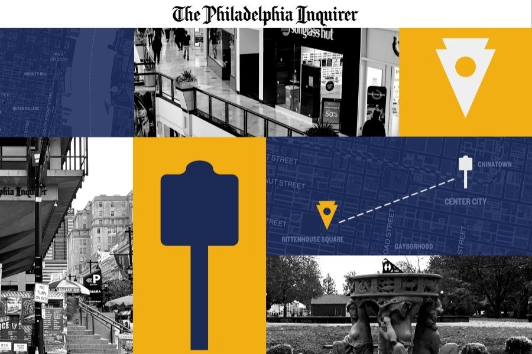
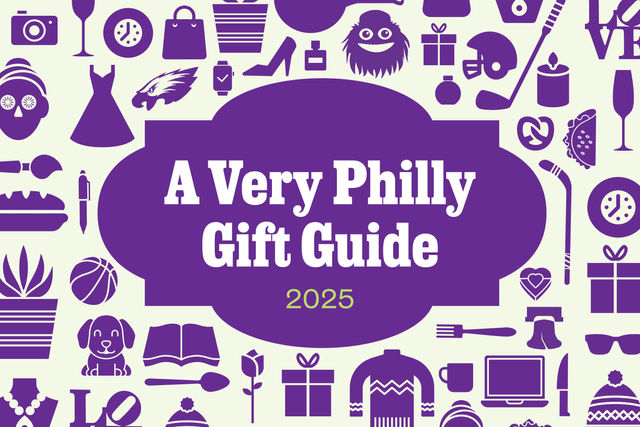
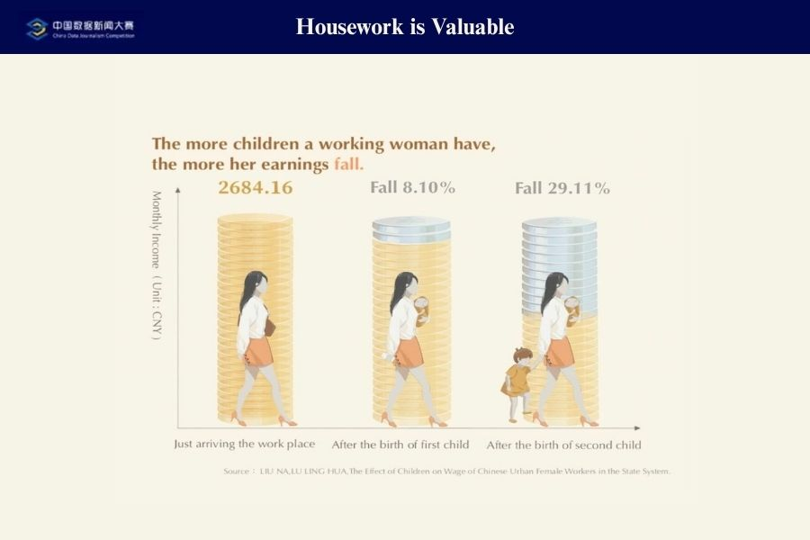

Interactive Design & Development
Citywide Quest
Weekly news game series in the style of GeoGuessr, but Philadelphia-coded.
I design and develop interactive maps, webpages, databases, games and other products for newsrooms and NGOs.

Weekly news game series in the style of GeoGuessr, but Philadelphia-coded.

Seasonal sports quiz featuring Philadelphia athletes.

Gift guide with interactive features that provide personalized holiday gift recommendations.

An interactive database covering all you need to know about the common food additives used in the US.

Investigation of China’s first housework compensation bill.
★ 6th China Data Journalism Competition Bronze Medal